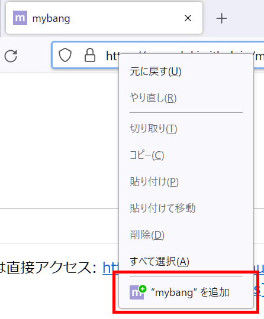
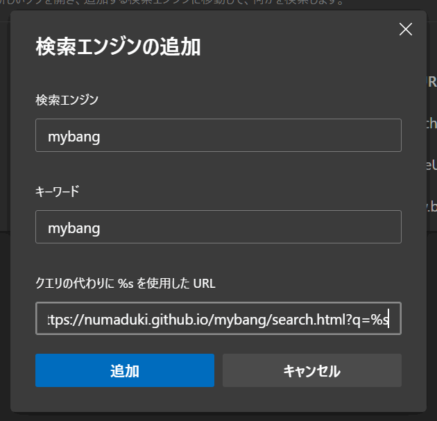

mybang
mybang名がなかった場合の動作
指定するURL（検索キーワード部分を
%sにして入力）:
設定は全てこのブラウザー内にのみ保存され、サーバーには保存されません。
概要
自分でDuckDuckGoのBang風のショートカットを作れます。
ただし仕様が一部（というかかなり）異なります。
- mybang名が冒頭にある場合のみ認識します。
- mybang名が空白含め、正確に一致した場合にのみ認識します。
- mybang名の冒頭が「!」である必要はありません。
- mybang名にはマルチバイト文字も使えます。（「ｇ」「ぐ」でGoogle検索などが可能）
ウェブブラウザーに登録
mybangの設定をする前に、ウェブブラウザーにmybangを検索エンジンとして追加します。
Mozilla Firefoxの場合、アドレスバーを右クリックすると、追加のためのボタンが表示されます。

Microsoft Edge等の場合、手動で追加します。「クエリの代わりに %s を使用した URL」を search.html?q=%s としてください。

設定の記述例
mybang
"mybang名":"URL"のペアで、JSONで記述します。検索キーワード部分は%sとしてください。
mybang名がなかった場合の動作 > 指定するURL
＜例＞ DuckDuckGo 過去1年間 - https://duckduckgo.com/?q=%s&ia=web&kl=jp-jp&df=y DuckDuckGo HTML版 - https://html.duckduckgo.com/html/?q=%s&kl=jp-jp DuckDuckGo lite版 - https://lite.duckduckgo.com/lite/?q=%s&kl=jp-jp Bing - https://www.bing.com/search?q=%s
ドキュメント
もともと個人用に使うために作成・設置したものですが、もしかしたら使いたい人もいるかもしれないので、一応ドキュメントを置いておきます。
ライセンス
MIT Licenseです。
利用について
このツールは自由に使っていただいてかまいません。ただし、作者のGitHub Pagesに設置してある https://numaduki.github.io/mybang/ を使うのではなく、自分のGitHub Pagesを使ったり、自分のマシン上のローカルサーバーで使うことをおすすめします。
リポジトリ: GitHub - numaduki/mybang: Bang（DuckDuckGo）風ショートカットを作成
リリースページ: Releases · numaduki/mybang · GitHub
データの保存について
mybangの設定データは全てブラウザー内にのみ保存され、他のウェブブラウザーと自動的に共有はできません。他のブラウザーでも使いたい場合は、手動でJSONデータ等をコピーアンドペースト（と検索エンジンとして登録）してください。
その他
設定によっては search.htmlへのリダイレクトがループする可能性があるため、ごく短い間隔でアクセスされた場合は処理を止めるようにしています。
初期化（設定の削除）
このブラウザーに保存されているmybangの設定を全て削除します。初期化したい場合・mybangを今後利用しない場合に押してください。